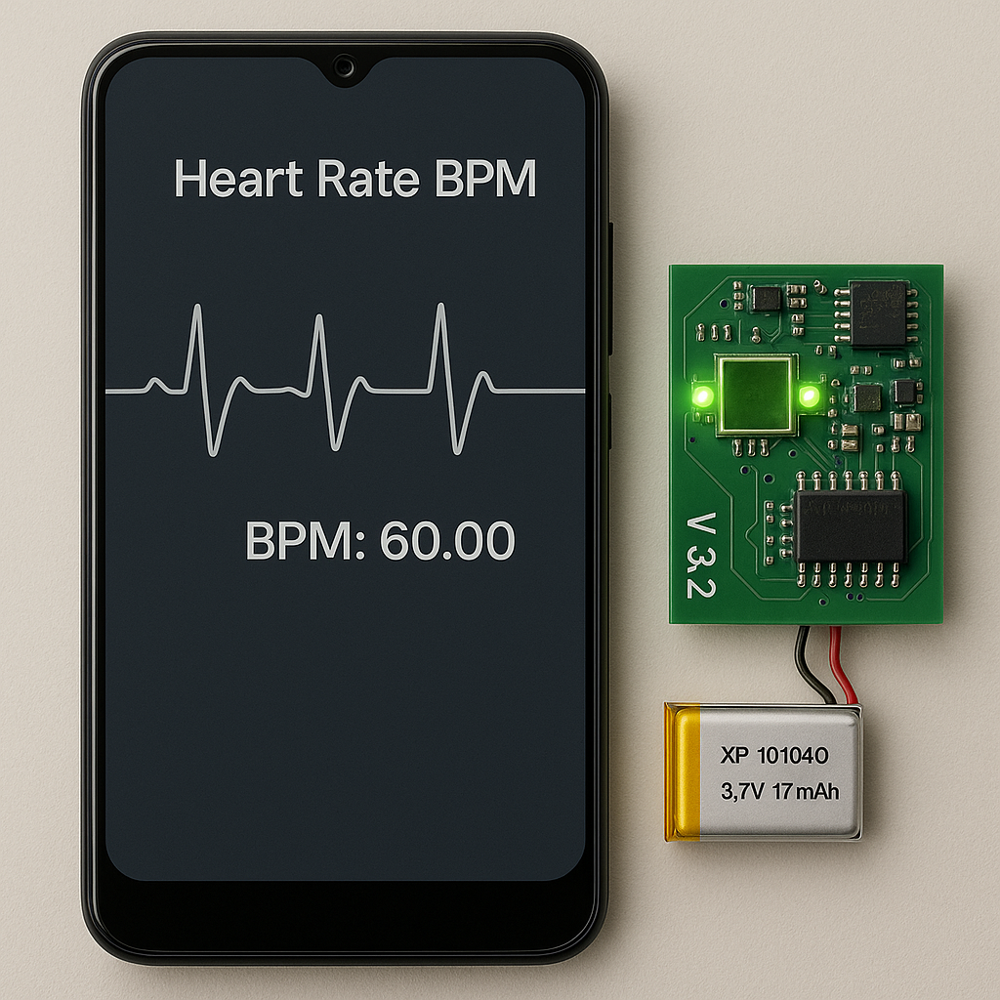
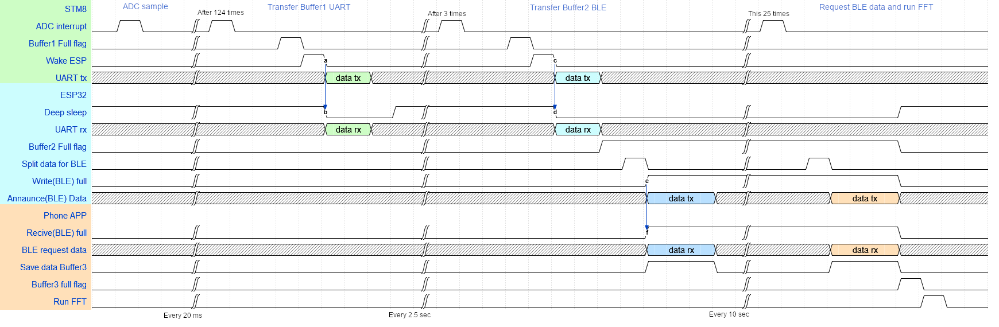
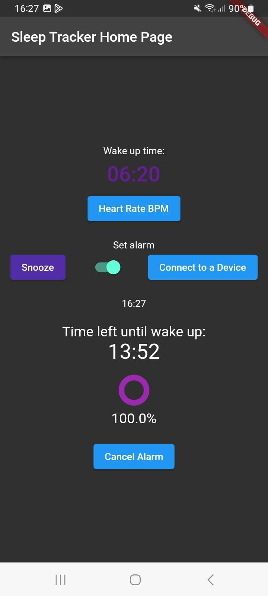

IoT Wearable for Sleep Cycle Analysis & Smart Alarming
A compact, low-cost, and energy-efficient wearable that wirelessly monitors heart rate and visualize it on a smartphone.
I create innovative engineering solutions from concept to deployment, specializing in embedded systems, hardware design, and IoT applications.


I'm an IPC CID certified electronics engineer with expertise in end-to-end product development, from initial concept to final production. With a background in electrical engineering and 3+ years of experience in hardware design, firmware development, and system integration, I specialize in creating innovative solutions for complex engineering challenges.
My passion lies in developing embedded systems and IoT devices that bridge the gap between hardware and software, creating seamless experiences for users while solving real-world problems. I thrive in collaborative environments where I can contribute my technical expertise while learning from diverse perspectives.
When I'm not designing circuits or writing firmware, you can find me experimenting with new technologies, contributing to open-source projects, or mentoring aspiring engineers.

A compact, low-cost, and energy-efficient wearable that wirelessly monitors heart rate and visualize it on a smartphone.
Imagine waking up refreshed, not startled by a jarring alarm. That was the vision behind this project: a compact, low-cost IoT wearable engineered from the ground up to understand your sleep cycles through heart rate measurement. This endeavor was a deep dive into the complete IoT product lifecycle, spanning the design and development of custom hardware, firmware development, and mobile APP creation.
The primary challenge was to develop an affordable wearable capable of accurate, continuous physiological monitoring like heart rate and movement (specifically Photoplethysmography - PPG) throughout an 8-hour sleep period. This demanded exceptional power efficiency to last the night, robust signal processing to extract clean data from noisy on-wrist measurements, and seamless data transmission to a mobile device for analysis and user interaction – all while keeping the Bill of Materials (BOM) as low as possible. Custom-designing every layer of the system gave us complete control to specifically design a product that met our requirements.
To master the critical power challenge for all-night operation and to keep cost low, we engineered a power management strategy, using a dual-processor architecture. An ultra-low-power STM8S microcontroller acted as the dedicated 'sensing engine.' It continuously sampled Heart Rate (PPG) data at a precise 50Hz – a frequency also chosen to leverage nyquist-shannon theorem of aliasing to filter out common 50Hz environmental noise.
The true power savings, however, were unlocked by the role of its partner, an ESP32-C3 Mini. This more powerful MCU remained in Deep Sleep mode for the vast majority of the time, waking for mere milliseconds only when signaled by the STM8S.
As illustrated in our system timing diagram (see Figure X), the ESP32 would wake every 2.5 seconds upon the 'Wake ESP' signal, triggered after the STM8S filled its buffer, to receive a 125-byte data chunk (The limit of the stm8) via UART. After aggregating four such transfers into its own buffer (representing 10 seconds of data), it would then briefly handle the efficient Bluetooth Low Energy (BLE) 'Announce Data' and subsequent transmission to the app before returning to its ultra-low power Deep Sleep state. This orchestrated interplay, minimizing the ESP32's active time (also reflected in Figure Y: Device Sleep Cycle showing power spikes), was pivotal. It enabled an impressive 16.84 hours of continuous operation on a single 245mAh battery, an 8-fold improvement directly attributable to this duel microcontroller operation, Data packaging scheme and optimized wake/sleep scheduling.

A core design critera from the outset was to create a truly wearable and unobtrusive device. This necessitated attention to component selection for minimal footprint and a highly compact Printed Circuit Board (PCB) layout. We successfully engineered the entire system onto a mere 35mm x 19mm PCB, a significant achievement given the inclusion of two microcontrollers, a complete analog front-end for PPG sensing, power management ICs, and the ESP32's integrated antenna.
For cost-effectiveness, we committed to a 2-layer PCB design. This presented a considerable routing challenge compared to a multi-layer boards. However, by using PCB best practises for Mixed siganl routing, planning component placement and signal paths, we were able to implement best practices even within these constraints. This included clear differentiation and separation of power, analog, and digital sections on the board to minimize noise coupling and ensure signal integrity. Ground planes were carefully managed, and trace routing for sensitive analog signals was prioritized to shield them from digital interference, all contributing to the reliable performance of our PPG sensor.
Our orchestrated interplay between the STM8S and ESP32, minimizing the ESP32's active time, was pivotal. It enabled an impressive 16.84 hours of continuous operation on a single 245mAh battery, an 8-fold improvement directly attributable to this aggressive deep sleep implementation and optimized wake/sleep scheduling.
Before we could even begin to analyze complex physiological signals, we first had to build undoubtable trust in our entire data pipeline. We achieved this through end-to-End, Known Signal Validation. By injecting a precise 1.1Hz sine wave from a function generator directly into the STM8S microcontroller's ADC, we traced its journey though every step of the system. The resulting clean, perfectly reconstructed sine wave (see Figure Z: Function Generator Test) – captured after traversing STM8S buffers, UART, ESP32 buffers, BLE, and mobile app reassembly – conclusively verified the integrety of our entire data pathway. This foundational validation ensured that any variations seen later with the actual PPG sensor were due to physiology or sensor noise, not systemic data corruption.
The data's journey culminated in a user-friendly mobile application, developed using Flutter for cross-platform compatibility. This app served not only as the BLE client and data display interface but also housed critical Digital Signal Processing (DSP) capabilities.
A key challenge was transmitting enough continuous data for meaningful Fast Fourier Transform (FFT) analysis given BLE 4.0's 20-byte packet limitation. Our solution was an intelligent circular buffer on the app. The ESP32 firmware buffered 10 seconds (500 bytes) of heart rate data, which the app requested in 25 consecutive GATT chunks. The app then aggregated these segments and maintained a 50-second rolling window (2500 samples) for FFT processing. This strategy achieved a fine 1.2 BPM frequency resolution for accurate heart rate detection, offloading intensive computation and thus Power consumption from the wearable.
For user frindlyness and Unique identification and communication, we implemented custom 128-bit UUIDs for our BLE GATT services and characteristics. This ensured the app would only identify That given device and therefore not connecting to or showing other devices in the area.

From the project's inception, a primary objective alongside technical excellence was to ensure the wearable could be remarkably cost-effective, guiding our component selection and design decisions throughout development.
| Component | Price for 1 | Price for 100 | Price for 1000 |
|---|---|---|---|
| LLS2D11I2TR | 16.39 DKK ($2.46) | 9.35 DKK ($1.40) | 7.25 DKK ($1.09) |
| STM8S003F3P6TR | 7.48 DKK ($1.12) | 5.22 DKK ($0.78) | 3.40 DKK ($0.51) |
| tcr2ef33(ict) | 2.24 DKK ($0.34) | 0.93 DKK ($0.14) | 0.47 DKK ($0.07) |
| MCP6002T-I/MS | 2.79 DKK ($0.42) | 2.11 DKK ($0.32) | 2.11 DKK ($0.32) |
| MCP6004T-I/ST | 3.67 DKK ($0.55) | 2.79 DKK ($0.42) | 2.79 DKK ($0.42) |
| ESP32C3-MINI-1-N4 | 12.24 DKK ($1.84) | 12.24 DKK ($1.84) | 12.24 DKK ($1.84) |
| SFH 2430-Z | 12.31 DKK ($1.85) | 6.31 DKK ($0.95) | 6.31 DKK ($0.95) |
| 16x 0402 caps | 10.88 DKK ($1.63) | 0.67 DKK ($0.10) | 0.40 DKK ($0.06) |
| 23x 0402 resistors | 15.64 DKK ($2.35) | 1.13 DKK ($0.17) | 0.65 DKK ($0.10) |
| LS0710HABH1500 | 12.10 DKK ($1.82) | 9.39 DKK ($1.41) | 7.82 DKK ($1.17) |
| Mcp73831-2aci/mc | 5.37 DKK ($0.81) | 4.42 DKK ($0.66) | 4.42 DKK ($0.66) |
| PCB | 3.46 DKK ($0.52) | 2.80 DKK ($0.42) | 1.21 DKK ($0.18) |
| Total | 104.57 DKK ($15.69) | 57.35 DKK ($8.60) | 49.06 DKK ($7.36) |
Our strategic component selection resulted in a unit cost of just 49.06 DKK ($7.36 USD) at volume production, making our wearable solution far more affordable than commercial alternatives typically retailing for $100-150.
Our engineering efforts were rigorously validated. The wearable demonstrated strong real-world heart rate monitoring accuracy, achieving a Pearson correlation coefficient of R = 0.873 when benchmarked against a commercial Fitbit Inspire 2 device during seated tests.
Critically, this level of performance was achieved with remarkable cost-effectiveness. Our detailed Bill of Materials analysis showed a potential production cost of just 49 DKK (~€6.50 / $7.00) per unit in bulk quantities.
The user experience was also paramount. The device features a custom-sewn fabric wristband with memory foam, ensuring comfort for overnight wear and effectively blocking ambient light to improve sensor accuracy. USB-C charging was incorporated for modern convenience.
This wearable sleep tracker project was a comprehensive journey through the entire IoT product development lifecycle. From grappling with the nuances of analog sensor design and mastering ultra-low-power embedded systems to crafting an intuitive mobile user experience and validating performance against commercial benchmarks, it provided invaluable hands-on experience. The key takeaway is the demonstration that sophisticated, accurate, and user-friendly health monitoring technology can be engineered to be both highly effective and remarkably affordable. The resulting platform is not just a successful academic endeavor but a solid foundation ripe for future development, potentially integrating accelerometer data and machine learning algorithms to deliver even deeper insights into sleep quality and overall wellness.
Below is a timelapse video showing the device in use alongside a Fitbit for comparison testing:

A professional-grade electrochemical measurement instrument with precision analog front-end circuitry and an intuitive Python GUI for experimental control and data analysis.


This project involved the development of a complete electrochemical measurement system, featuring a high-precision potentiostat with an intuitive Python-based user interface. The system enables researchers and engineers to perform various electrochemical techniques with laboratory-grade accuracy at a fraction of the cost of commercial instruments.
The potentiostat hardware was designed with a focus on precision and noise immunity:
The firmware implements a robust control system with several features:
The user interface was built using PyQt5 with a focus on usability:
Achieving sub-nanoamp measurement resolution required careful PCB layout and shielding. I implemented a multi-layer PCB with guard rings, dedicated analog ground planes, and strategic component placement to achieve a noise floor below 500 pA peak-to-peak.
Electrochemical measurements often span 6+ orders of magnitude in current. I designed an auto-ranging system with seamless gain switching and overlapping ranges to provide accurate measurements from 1nA to 100mA without manual intervention.
High-speed techniques like Fast-Scan Cyclic Voltammetry require precise timing and rapid data acquisition. I implemented a dual-core architecture where one core handles critical timing while the second manages communication and non-time-critical tasks.
The completed potentiostat system delivers impressive performance metrics:
This instrument has been successfully deployed in multiple research laboratories and has enabled several publications in electrochemical sensors and materials characterization. The open-source design has also been adopted and modified by researchers worldwide for specialized applications.

An intelligent plant monitoring and irrigation system using soil moisture sensors, environmental monitoring, and adaptive watering schedules controlled through a mobile app.

A battery-operated environmental monitoring system capable of multi-year deployment with comprehensive sensor array and efficient data storage.
Lead engineer for IoT product development, responsible for hardware architecture, PCB design, and cross-functional team coordination.
Developed firmware and hardware for consumer electronics and industrial control systems.
Contributed to the development of wireless audio products and Bluetooth-enabled devices.
"Alan's technical expertise and problem-solving abilities were instrumental in the success of our IoT product line. His attention to detail and systematic approach to hardware design significantly improved our product reliability."

"Working with Alan on our environmental monitoring system was a true pleasure. His deep understanding of embedded systems and low-power design techniques enabled us to exceed our battery life targets by more than 300%."

"Alan consistently delivers high-quality designs that balance technical excellence with practical considerations like manufacturability and cost. His ability to communicate complex technical concepts to non-technical stakeholders is exceptional."

Whether you're interested in discussing potential projects, exploring collaboration opportunities, or just wanting to say hello, I'd love to hear from you.